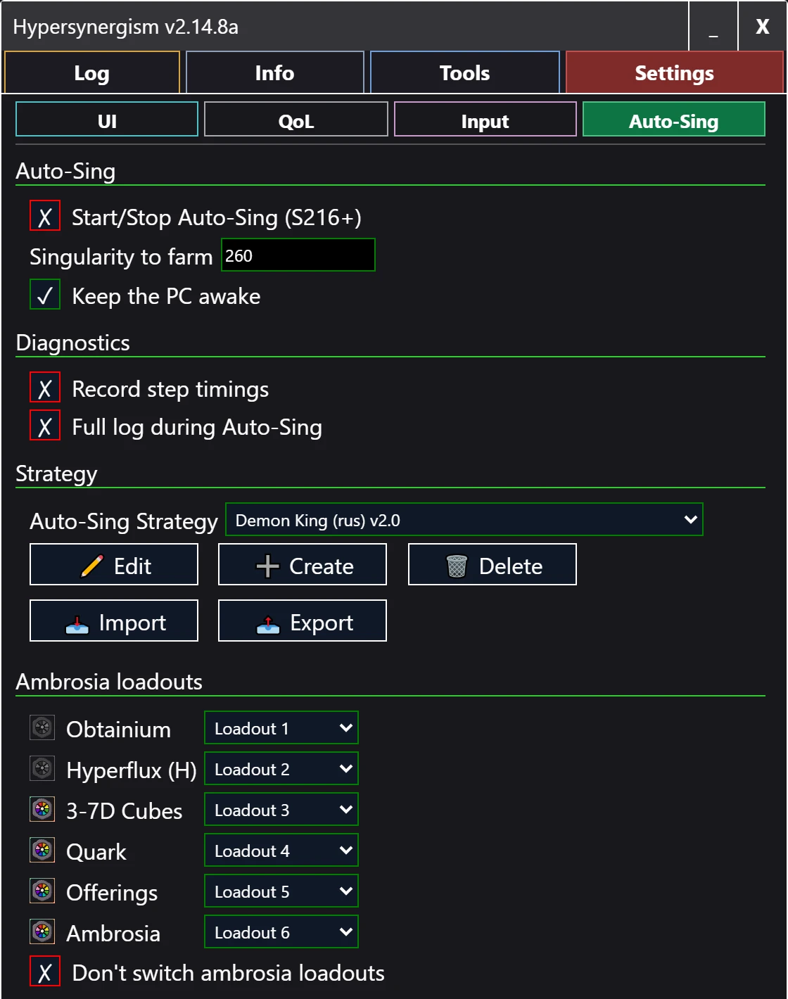
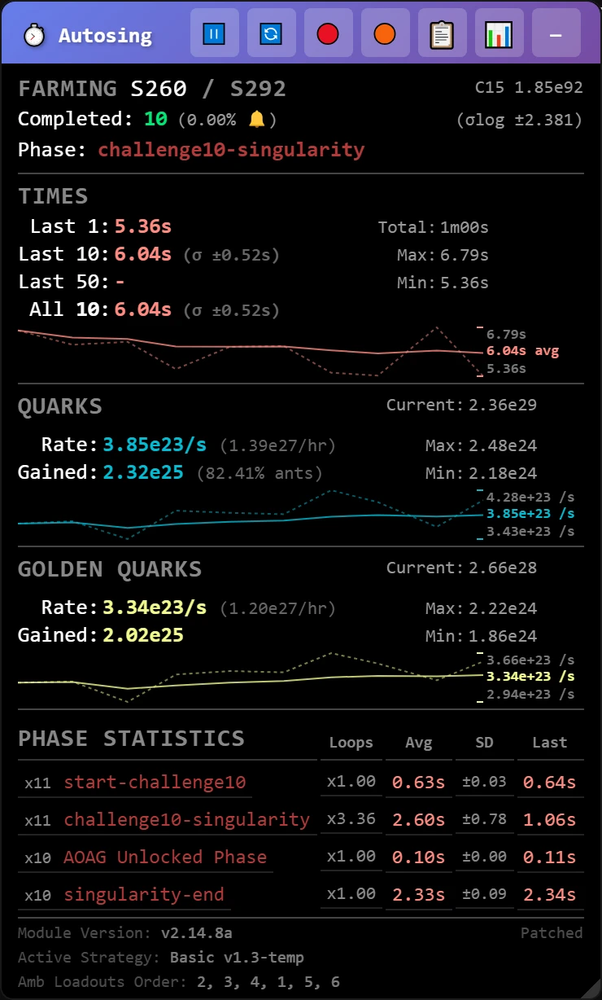
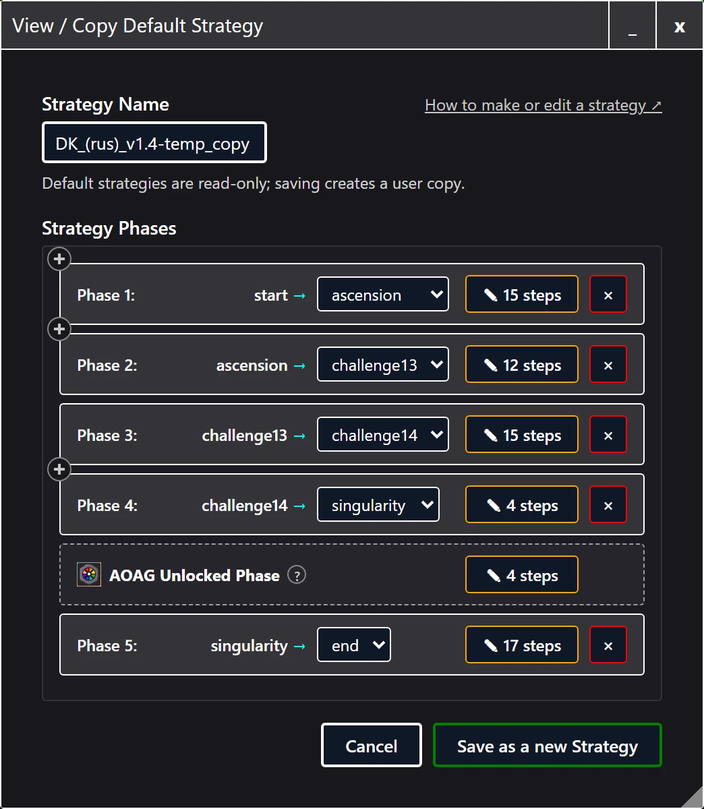
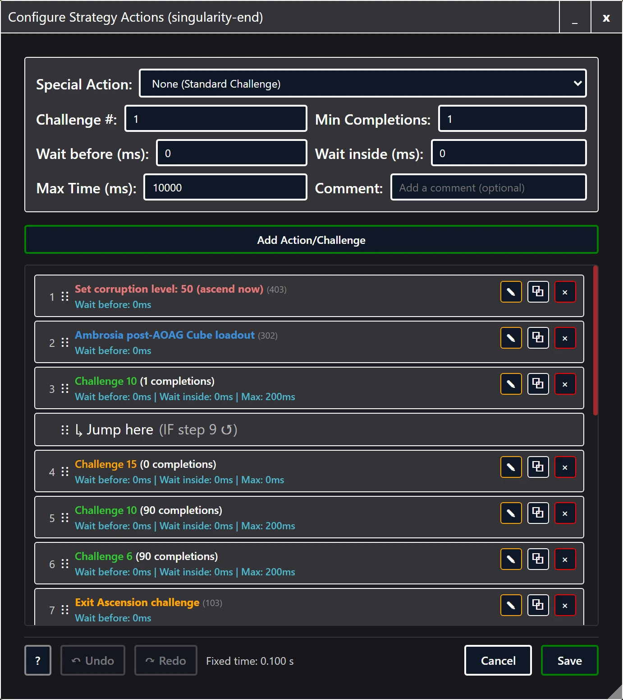
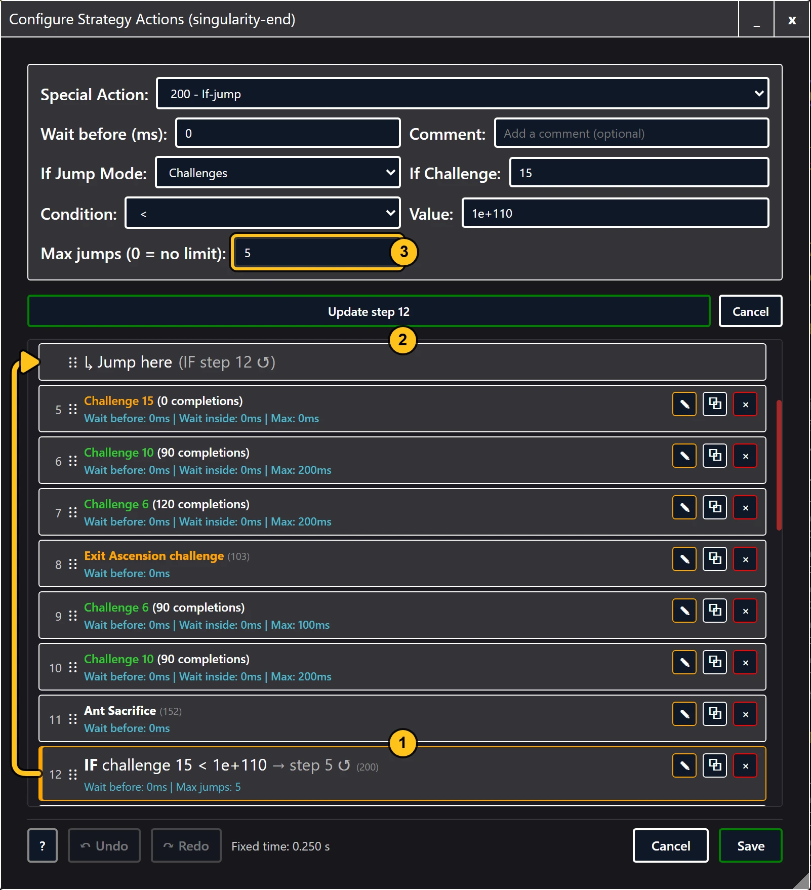
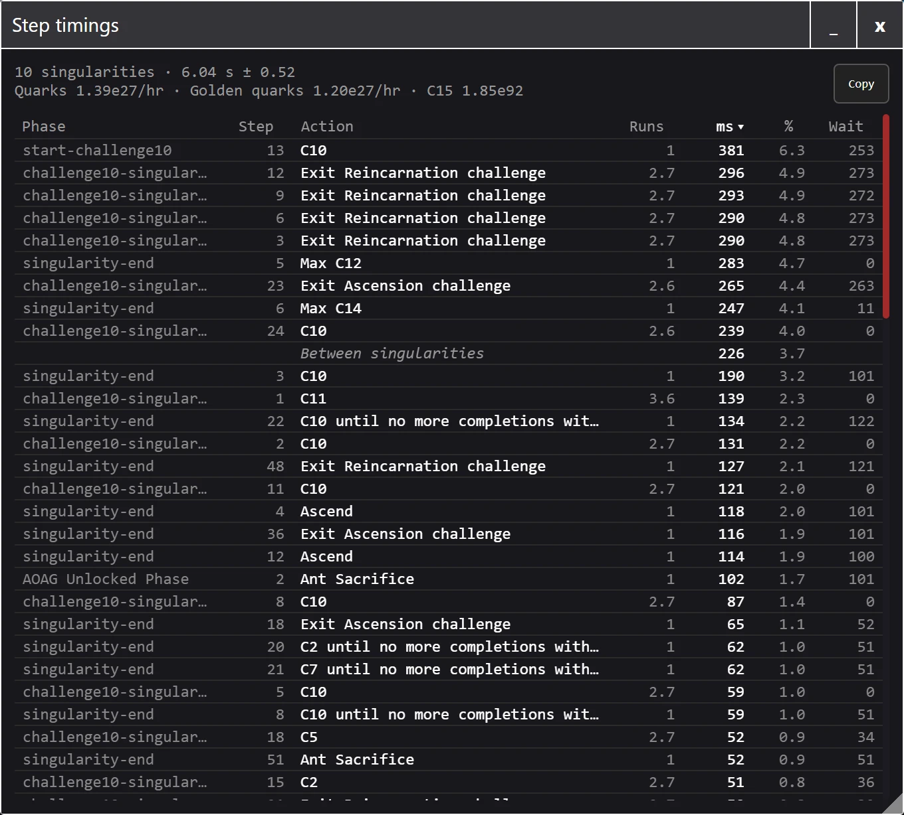

Auto-Sing guide
Auto-Sing plays singularities for you, following a strategy. It's for the end game: S216+, and it only works fully once you've cleared EXALT6.
Important
It needs Tampermonkey or Steam: with the bookmark, it's slow and unreliable.
Getting started

- Open the mod panel (the mod's icon, top left), then Settings → Auto-Sing.
- Strategy: pick one. The default strategies are a place to start; some of them are meant for the very end of the game. Those under Old Strategies (named "-temp") haven't been retuned by their authors since the game's corruption rework. To adapt one or make your own, see Making or editing a strategy.
- Ambrosia loadouts: for each role (pre-AOAG cubes, post-AOAG cubes, quarks, obtainium, offerings, luck), pick the game slot that holds that loadout. The Ambrosia Heater (Tools tab) finds the best ones for your save. Each loadout switch resets the ambrosia bars' progress. If you don't want that, tick Don't switch ambrosia loadouts: Auto-Sing then never switches.
- Turn on Start/Stop Auto-Sing, or click Start Auto-Sing in the menu by the mod's icon.
The Auto-Sing window shows the time per singularity, the quarks and golden quarks gained per second, and how much of your quarks came from the Ants to Quark Corner. Its buttons: ⏸️ pause, 🔄 restart the singularity, 🟠 stop at the end of this singularity, 🔴 stop now, 📋 step timings (with Record step timings on), 📊 details.
Which singularity to farm

- Start low: a singularity should take 15 to 20 seconds at most. That can be 30 singularities below your highest, and that's normal.
- Then go up one singularity at a time, as long as golden quarks per second keep going up.
- Wait for 10 to 15 singularities before you compare: one singularity alone varies too much.
When a run stops or stalls
Auto-Sing keeps its speed when the game is in another tab. What can still stop or slow it:
- The computer going to sleep. The Keep the PC awake setting prevents it while the game is in view. On Steam, it also works while the window is minimized or covered and while the PC is locked. In a browser, it doesn't: for another tab, a minimized or covered window, or a locked PC, change your computer's sleep settings instead.
- Chrome's Energy Saver (a leaf icon next to the address bar). It can freeze a hidden tab after 5 minutes. Turn it off in
chrome://settings/performance, or keep the game window in view. - A singularity much slower than the others, or one that never ends. The strategy doesn't suit your account at that singularity: farm a few singularities lower (Which singularity to farm). To see where it waits, turn on Full log during Auto-Sing (Settings → Auto-Sing) and tick Debug logs under the mod panel's Log tab: each step writes a line, numbered as in the phase's actions window (✎). A step that ran out of time shows there even without the full log. Record step timings shows which steps take the time (Testing a strategy).
- A game window left open. During a run, Auto-Sing answers the game's confirmations and closes its messages, yours included. A window that asks you for something (an amount, a purchase) or an information message stays open, and Auto-Sing waits behind it at the end of the singularity: close it.
- Your game settings after a run. Auto-Sing changes some game settings for its run (auto-buy toggles, buy amounts, cube opening…) and puts them back when it stops, also after a failed start. If the game was reloaded or closed during a run, they're put back at the next load, with a notification. An Exalt the run was in is left as it is.
Making or editing a strategy
Start from a default strategy
Editing a default strategy is easier than starting from a blank one:
- Select the default strategy closest to your account, then click ✏️ Edit: it opens a copy that you save under a new name.
- Change one thing at a time, then compare the two versions (see Testing a strategy).
The edits players make most often:
- Corruption levels: the default strategies set 20 before leaving the first C15, then 50 at the start of the last phase. Corruptions were reworked in the game's 4.4.0, so these levels are only a starting point: try your own.
- The last C15 loop: its IF step jumps back while C15 is below 1exxx. Lower the value if your account never reaches it, raise it if it gets there easily.
- Waits: shorten a step's Wait before or Wait inside when your account doesn't need it, lengthen it when the next step starts too early.
- Max Time: lower it on a challenge step that keeps running without getting its completions.
How Auto-Sing follows a strategy
A strategy is a list of phases. Each phase covers a part of the singularity, from one game stage to another. To see your current stage: the game's Settings → Stats for Nerds → Miscellaneous.
- Phases follow each other: the first starts at "start", each one starts where the previous one ends, and the last one ends at "end".
- Auto-Sing reads the current stage, runs the steps of the phase that covers it from top to bottom, then reads the stage again. A phase runs again as long as the stage stays in its range.
- A phase doesn't reset by itself. Only Ascend, Exit Ascension challenge, entering an ascension challenge and "Set corruption level" (with Ascend immediately) do.
- AOAG phase: once the AOAG rune is unlocked (P4x5), Auto-Sing stops the current phase and runs the AOAG phase, then the phase that ends at "end". It starts with "Set corruption level" 0: no offering penalty to buy the AoAG rune.
- At the end, Auto-Sing switches to your Quark loadout, ascends and exports the save for the bonus quarks, then starts a new singularity.
The strategy window

In Settings → Auto-Sing:
- ➕ Create opens a blank strategy (starting from a default is usually easier).
- ✏️ Edit opens the selected one. Default strategies can't be changed: Edit opens a copy that you save under a new name.
- 📤 Export copies the strategy to share it; 📥 Import adds one from a copy.
In the window:
- Strategy Name at the top.
- Each row is a phase: Phase N: start → [end ▾] [✎ k steps] [×]. Change a phase's end with its dropdown, open its steps with ✎, delete it with ×.
- The dashed AOAG Unlocked Phase row sits right before the phase that ends at "end", which is where it runs. Hover its ? to see when it starts.
- Add phase until… ▾ adds the next phase. The round + on a phase's left border inserts a phase inside it.
- "0 steps" in red: a phase needs at least one step.
- Create Strategy / Update Strategy saves. A strategy must go all the way to "end".
The actions window (✎)

Steps run from top to bottom. Pick a Special Action, fill in the fields shown, then click Add (or press Enter). New steps go where Add Here is; drag it, or double-click a step, to add elsewhere.
None = a challenge step:
- Challenge #: the challenge (1–15).
- Min Completions: stay in it until it has this many. 0 = enter it, then wait.
- Wait before (ms): wait before the step starts.
- Wait inside (ms): once Min Completions is reached, wait this long before the next step.
- Max Time (ms): go to the next step after this long, even if Min Completions isn't reached (Wait before not counted).
The other actions are grouped in the dropdown (Exit and Ascend, Game actions, Challenges, Ambrosia loadouts, Corruption level…). Each shows only the fields it uses. A few:
- 601-610 - C1-C10 until no more completions: runs one of C1–C10 until it stops getting completions.
- 403 - Set corruption level: sets the level used from the next ascension. With Ascend immediately ticked, it ascends right away (or leaves the current ascension challenge). Set the actual level: the game adds your free levels on top.
- 405 - Cleanse corruption: the game's Cleanse, without ascending: lowers the current level to 0 at once, or to your highest cleared level with Cleanse to highest cleared level ticked. The next ascension uses that level too.
- Store C15: keeps C15's current score for an IF step to compare against.
If-jump steps

An If-jump step (an IF row 1 in the list) jumps to its Jump here row 2 when its condition holds, else the steps continue below it.
- Challenges mode: compares a challenge's completions (If Challenge) with Value, using > or <.
- Stored C15 value mode: compares C15's current score with the stored score × 10^Multiplier.
- Max jumps 3: the IF jumps at most this many times per phase run, then continues below it even if its condition still holds (0 = no limit). It keeps an account that never reaches a C15 target from looping forever. The default strategies' last C15 loop has 5.
- The IF row says where it jumps (→ step N), and the Jump here row which IF it belongs to: click either one to see the other. ↺ means the IF jumps back (a loop).
- Follow the colored line from an IF to its Jump here row. Drag the arrow or the row’s handle to change the destination. Hold Shift while dragging an IF to pick up its jump marker. Release Shift to leave the marker where it is.
Editing steps
- ✎ on a step loads it into the fields: change them, then Update step N.
- ⧉ duplicates a step, × deletes it, ⋮⋮ drags it.
- Undo / Redo (Ctrl+Z / Ctrl+Y) are at the bottom, next to Fixed time: the time the phase spends waiting, IF jumps not followed.
- Comments are just for you.
Warning
Save in the actions window only keeps your changes in the strategy window. Click Update Strategy (or Create Strategy) there to save for good.
Testing a strategy

Turn on Record step timings in Settings → Auto-Sing, then start Auto-Sing. 📋 in the Auto-Sing window shows where a singularity's time goes, step by step:
- Runs: times per singularity. ms: time per singularity. %: its part of a singularity. Wait: the part of ms spent in the step's Wait before.
- Between singularities and Outside the steps are the time spent in no step of your strategy.
- Click a column's title to sort by it. Copy gives the table as text, to compare two runs or share one.
To compare two versions of a strategy:
- Run each for 10 to 15 singularities: one singularity alone varies too much.
- Keep the same ambrosia loadouts: two heats at the same singularity can differ by 15%.
- Look at both quarks and golden quarks per hour, not only the time.
Tip
The table is emptied at the next start: Copy it first.